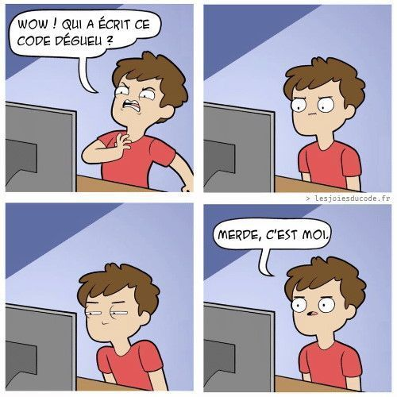

Présentation des standards permettant de produire du code lisible et maintenable, et d’outils pour faciliter leur adoption.
Dérouler les slides ci-dessous ou cliquer ici pour afficher les slides en plein écran.
Ce chapitre constitue une introduction à la question de la qualité du code,
premier niveau dans l’échelle des bonnes pratiques. Celui-ci présente
les enjeux de la qualité du code, les principes généraux pour améliorer
celui-ci et quelques outils ou gestes faciles à mettre en œuvre
pour améliorer la qualité du code. Ceux-ci sont approfondis dans
l’application fil rouge.
Introduction

Image empruntée à la page “Les joies du code”
L’enjeu d’un code lisible et maintenable
“The code is read much more often than it is written.”
Lorsqu’on s’initie à la pratique de la data science, il est assez naturel de voir le code d’une manière très fonctionnelle : je veux réaliser une tâche donnée — par exemple un algorithme de classification — et je vais donc assembler dans un notebook des bouts de code, souvent trouvés sur internet, jusqu’à obtenir un projet qui réalise la tâche voulue. La structure du projet importe assez peu, tant qu’elle permet d’importer correctement les données nécessaires à la tâche en question.
Si cette approche flexible et minimaliste fonctionne très bien lors de la phase d’apprentissage, il est malgré tout indispensable de s’en détacher progressivement à mesure que l’on progresse et que l’on est amené à réaliser des projets plus professionnels ou bien à intégrer des projets collaboratifs. Autrement, on risque de produire un code complexe à reprendre et à faire évoluer, ce qui pourrait conduire inévitablement à son abandon.
En particulier, il est important de proposer, parmi les multiples manières de résoudre un problème informatique, une solution qui soit intelligible par d’autres personnes parlant le même langage. Le code est en effet lu bien plus souvent qu’il n’est écrit, c’est donc avant tout un outil de communication. De même, la maintenance d’un code demande généralement beaucoup plus de moyens que sa phase de développement initial. Il est donc important de penser en amont la qualité de son code et la structure de son projet de sorte à le rendre maintenable dans le temps.
Afin de faciliter la communication et réduire la douleur d’avoir à faire évoluer un code obscur, des tentatives plus ou moins institutionnalisées de définir des conventions ont émergé. Ces conventions dépendent naturellement du langage utilisé, mais les principes sous-jacents s’appliquent de manière universelle à tout projet basé sur du code.
De l’importance de suivre les conventions
Python est un langage très lisible. Avec un peu d’effort sur le nom des objets, sur la gestion des dépendances et sur la structure du programme, on peut très bien comprendre un script sans avoir besoin de l’exécuter. C’est l’une des principales forces du langage Python qui permet ainsi une acquisition rapide des bases et facilite l’appropriation d’un script.
La communauté Python a abouti à un certain nombre de normes, dites PEP (Python Enhancement Proposal), qui constituent un standard dans l’écosystème Python. Les deux normes les plus connues sont :
la norme PEP8 qui définit un certain nombre de conventions relatives au code ;
la norme PEP257 consacrée à la documentation (docstrings).
Ces conventions vont au-delà de la syntaxe. Un certain nombre de standards d’organisation d’un projet ont émergé, qui seront abordées dans le prochain chapitre.
NoteComparaison avec
Dans l’univers , la formalisation a été moins organisée. Ce langage est plus permissif que Python sur certains aspects2. Néanmoins, des standards ont émergé récemment, à travers un certain nombre de style guides dont les plus connus sont le tidyverse style guide et le google style guide, MLR style guide…
Ce post qui pointe vers un certain nombre de ressources sur le sujet.
Ces conventions sont arbitraires, dans une certaine mesure. Il est tout à fait possible de trouver certaines conventions moins esthétiques que d’autres.
Ces conventions ne sont pas non plus immuables : les langages et leurs usages évoluent, ce qui nécessite de mettre à jour les conventions. Cependant, adopter dans la mesure du possible certains des réflexes préconisés par ces conventions devrait améliorer la capacité à être compris par la communauté, augmenter les chances de bénéficier d’apport de celle-ci pour adapter le code, mais aussi réduire la difficulté à faire évoluer un code.
Il existe beaucoup de philosophies différentes sur le style de codage et, en fait, le plus important est la cohérence : si on choisit une convention, par exemple snake case (toto_a_la_plage) plutôt que camel case (totoALaPlage), le mieux est de s’y tenir.
Principe 1️⃣ : Adopter les standards communautaires
Dans la lignée de la vision des bonnes pratiques comme continuum proposée en introduction, il n’est pas nécessairement souhaitable d’appliquer toutes les recommandations présentées dans ce chapitre à chaque projet. Sur certains projets, le coût marginal d’adopter certaines pratiques peut excéder les bénéfices induits. Nous recommandons plutôt de voir ces bonnes pratiques comme de bonnes habitudes à acquérir en opérant un va-et-vient régulier entre la pratique et la théorie. Les outils que nous allons proposer seront là pour accélérer la mise en œuvre des bonnes pratiques.
Les éléments exposés dans ce chapitre n’ont pas vocation à être exhaustifs. Ils visent à pointer vers quelques ressources utiles tout en proposant des conseils pratiques. L’apprentissage par cœur de ces règles ou faire des aller-retour en continu entre le code et les manuels de règles serait quelques peu rébarbatif.
Pour faire le parallèle avec le langage naturel, on n’a pas toujours le bescherelle ou le dictionnaire sous les yeux. Les éditeurs de texte ou les smartphones embarquent des correcteurs orthographiques qui identifient, voire corrigent directement le texte écrit.
Un bon IDE, un premier pas vers la qualité
Sans les outils automatisés de mise en forme du code, l’adoption des bonnes pratiques serait coûteuse en temps et donc difficile à mettre en œuvre au quotidien. Ces outils, que ce soit par le biais de diagnostics ou de mise aux normes automatisée du code rendent de précieux services. Adopter les standards minimaux de qualité est plus ou moins instantané et économise un temps précieux dans la vie d’un projet de data science. C’est un préalable indispensable à la mise en production, sur laquelle nous reviendrons ultérieurement.
Le premier pas vers les bonnes pratiques est d’adopter un environnement de développement adapté. VSCode est un très bon environnement comme nous le découvrirons dans la partie pratique. Il propose tous les outils d’autocomplétion et de diagnostics usuels (contrairement à Jupyter) et propose une grande gamme d’extensions pour enrichir les fonctionnalités de l’IDE de manière contributive :
Exemple de diagnostics et d’actions proposés par VSCode
Néanmoins, les outils de détection de code au niveau des IDE ne suffisent pas. En effet, ils nécessitent une composante manuelle qui peut être chronophage et ainsi pénible à appliquer régulièrement. Heureusement, il existe des outils automatisés de diagnostics et de mise en forme.
Les outils automatisés pour le diagnostic et la mise en forme du code
Python étant l’outil de travail principal de milliers de data-scientists, un certain nombre d’outils ont vu le jour pour réduire le temps nécessaire pour créer un projet ou disposer d’un code fonctionnel. Ces outils permettent un gros gain de productivité, réduisent le temps passé à effectuer des tâches rébarbatives et améliorent la qualité d’un projet en offrant des diagnostics, voire des correctifs à des codes perfectibles.
Les deux principaux types d’outils sont les suivants :
Linter : programme qui vérifie que le code est formellement conforme à un certain guidestyle
signale des problèmes formels, sans corriger
Formatter : programme qui reformate un code pour le rendre conforme à un certain guidestyle
modifie directement le code
TipExemples
Exemples d’erreurs repérées par un linter :
lignes de code trop longues ou mal indentées, parenthèses non équilibrées, noms de fonctions mal construits…
Exemples d’erreurs non repérées par un linter :
fonctions mal utilisées, arguments mal spécifiés, structure du code incohérente, code insuffisamment documenté…
Les linters pour comprendre les mauvaises pratiques appliquées
Les linters sont des outils qui permettent d’évaluer la qualité du code et son risque de provoquer une erreur (explicite ou silencieuse).
Voici quelques exemples de problèmes que peuvent rencontrer les linters:
les variables sont utilisées mais n’existent pas (erreur)
les variables inutilisées (inutiles)
la mauvaise organisation du code (risque d’erreur)
le non-respect des bonnes pratiques d’écriture de code
les erreurs de syntaxe (par exemple les coquilles)
La plupart des logiciels de développement embarquent des fonctionnalités de diagnostic (voire de suggestion de correctif). Il faut parfois les paramétrer dans les options (ils sont désactivés pour ne pas effrayer l’utilisateur avec des croix rouges partout). Néanmoins, si on n’a pas appliqué les correctifs au fil de l’eau la masse des modifications à mettre en œuvre peut être effrayante.
En Python, les deux principaux linters sont PyLint et Flake8. Dans les exercices, nous proposons d’utiliser PyLint qui est pratique et pédagogique. Celui-ci s’utilise en ligne de commande, de la manière suivante :
pip install pylintpylint monscript.py #pour un fichierpylint src #pour tous les fichiers du dossier src
Tip
L’un des intérêts d’utiliser PyLint est qu’on obtient une note, ce qui est assez instructif. Nous l’utiliserons dans l’application fil rouge pour comprendre la manière dont chaque étape améliore la qualité du code.
Il est possible de mettre en œuvre des pre commit hooks qui empêchent un commit n’ayant pas une note minimale.
Les formatters pour nettoyer en masse ses scripts
Le formatter modifie directement le code. On peut faire un parallèle avec le correcteur orthographique. Cet outil peut donc induire un changement substantiel du script afin de le rendre plus lisible.
Le formater le plus utilisé est Black. Récemment, Ruff, qui est à la fois un linter et un formatter a émergé pour intégrer à Black des diagnostics supplémentaires, issus d’autres packages.
Note
Pour signaler sur Github la qualité d’un projet utilisant Black, il est possible d’ajouter un badge dans le README:
Il est assez instructif de regarder le code modifié par les outils pour comprendre et corriger certains problèmes dans sa manière de développer. Par exemple, à la lecture de ce chapitre, vous allez certainement retenir en particulier certaines règles qui tranchent avec vos pratiques actuelles. Vous pouvez alors essayer d’appliquer ces nouvelles règles pendant un certain temps puis, lorsque celles-ci seront devenues naturelles, revenir à ce guide et appliquer le processus à nouveau. En procédant ainsi de manière incrémentale, vous améliorerez progressivement la qualité de vos projets sans avoir l’impression de passer trop de temps sur des micro-détails, au détriment des objectifs globaux du projet.
Le partage, une démarche favorable à la qualité du code
L’opensource comme moyen pour améliorer la qualité
En ouvrant son code sur des forges opensource (cf. chapitre Git), il est possible de recevoir des suggestions voire, des contributions de ré-utilisateurs du code. Cependant, les vertus de l’ouverture vont au-delà. En effet, l’ouverture se traduit généralement par des codes de meilleure qualité, mieux documentés pour pouvoir être réutilisés ou ayant simplement bénéficié d’une attention accrue sur la qualité pour ne pas paraître ridicule. Même en l’absence de retour de (ré)utilisateurs du code, le partage de code améliore la qualité des projets.
La revue de code
La revue de code s’inspire de la méthode du peer reviewing du monde académique pour améliorer la qualité du code Python. Dans une revue de code, le code écrit par une personne est relu et évalué par un ou plusieurs autres développeurs afin d’identifier les erreurs et les améliorations possibles. Cette pratique permet de détecter les erreurs avant qu’elles ne deviennent des problèmes majeurs, d’assurer une cohérence dans le code, de garantir le respect des bonnes pratiques mais aussi d’améliorer la qualité du code en identifiant les parties du code qui peuvent être simplifiées, optimisées ou refactorisées pour en améliorer la lisibilité et la maintenabilité.
Un autre avantage de cette approche est qu’elle permet le partage de connaissances entre des personnes expérimentées et des personnes plus débutantes ce qui permet à ces dernières de monter en compétence. Github et Gitlab proposent des fonctionnalités très pratiques pour la revue de code : discussions, suggestions de modifications…
Principe 2️⃣ : favoriser une structure modulaire
Objectifs
Favoriser la concision pour réduire le risque d’erreur et rendre la démarche plus claire ;
Améliorer la lisibilité ce qui est indispensable pour rendre la démarche intelligible par d’autres mais aussi pour soi, lorsqu’on reprend un code écrit il y a quelques temps ;
Limiter la redondance ce qui permet de simplifier un code (paradigme du don’t repeat yourself) ;
Limite les risques d’erreurs liées aux copier/coller
Avantages des fonctions
Les fonctions ont de nombreux avantages par rapport à de longs scripts :
Limite les risques d’erreurs liés aux copier/coller
Rend le code plus lisible et plus compact
Un seul endroit du code à modifier lorsqu’on souhaite modifier le traitement
Facilite la réutilisation et la documentation du code !
ImportantRègle d’or
Il faut utiliser une fonction dès qu’on utilise une même portion de code plus de deux fois (don’t repeat yourself (DRY))
TipRègles pour écrire des fonctions pertinentes
Une tâche = une fonction
Une tâche complexe = un enchaînement de fonctions réalisant chacune une tâche simple
Limiter l’utilisation de variables globales
En ce qui concerne l’installation des packages, nous allons voir dans les parties Structure de code et Portabilité qu’il ne faut pas gérer ceci dans le script mais dans un élément à part, relatif à l’environnement d’exécution du projet3. De même, ces parties présenteront des conseils pratiques sur la gestion des jetons d’accès à des API ou bases de données qui ne doivent jamais être inscrites dans un code.
Les scripts trop longs ne sont pas une bonne pratique. Il est préférable de diviser l’ensemble des scripts exécutant une chaîne de production en “monades”, c’est-à-dire en petites unités cohérentes. Les fonctions sont un outil privilégié pour cela (en plus de limiter la redondance, et d’être un outil privilégié pour documenter un code).
CautionExemple: privilégier les list comprehensions
En Python, il est recommandé de privilégier les list comprehensions à l’utilisation de boucles for indentées. Ces dernières sont en général moins efficaces et surtout impliquent un nombre important de ligne de codes là où les compréhensions de listes sont beaucoup plus concises
liste_nombres =range(10)# très mauvaisy = []for x in liste_nombres:if x %2==0: y.append(x*x)# mieuxy = [x*x for x in liste_nombres if x %2==0]
Conseils pour la programmation
Dans le monde de la programmation en Python, il existe deux paradigmes différents :
La programmation fonctionnelle est une approche qui construit un code en enchaînant des fonctions, c’est-à-dire des opérations plus ou moins standardisées ;
La programmation orientée objet (POO) consiste à construire son code en définissant des objets d’une certaine classe ayant des attributs (les caractéristiques intrinsèques de l’objet) et sur lequel on effectue des opérations ad hoc par le biais de méthodes qui encapsulent des opérations propres à chaque classe.
La programmation fonctionnelle est plus intuitive que la POO et permet souvent de développer du code plus rapidement. La POO est une approche plus formaliste. Celle-ci est intéressante lorsqu’une fonction doit s’adapter au type d’objet en entrée (par exemple aller chercher des poids différents selon le type de modèle Pytorch). Cela évite les codes spaghetti 🍝 inutilement complexes qui sont impossibles à débugger.
Néanmoins, il convient d’être pragmatique. La programmation orientée objet peut être plus complexe à mettre en œuvre que la programmation fonctionnelle. Dans de nombreuses situations, cette dernière, si elle est bien faite, suffit largement. Il est utile lorsqu’on développe dans le cadre d’un projet important d’adopter une approche dite de programmation défensive. Il s’agit d’un principe de précaution dans le paradigme de la programmation fonctionnelle qui vise à limiter les situations imprévues en étant capable de gérer, par exemple, un argument d’une fonction inattendu ou un objet à la structure différente de celle pour lequel le code a été pensé.
NoteLe code spaghetti
Le code spaghetti est un style d’écriture qui favorise l’apparition du syndrome du plat de spaghettis : un code impossible à démêler parce qu’il fait un usage excessif de conditions, d’exceptions en tous sens, de gestion des événements complexes. Il devient quasi impossible de savoir quelles ont été les conditions à l’origine de telle ou telle erreur sans exécuter ligne à ligne (et celles-ci sont excessivement nombreuses du fait de mauvaises pratiques de programmation) le programme.
En fait, la programmation spaghetti qualifie tout ce qui ne permet pas de déterminer le qui, le quoi et le comment. Le code est donc plus long à mettre à jour car cela nécessite de remonter un à un le fil des renvois.
TipUn exemple progressif pour comprendre
💡 Supposons qu’on dispose d’une table de données qui utilise le code −99 pour représenter les valeurs manquantes. On désire remplacer l’ensemble des −99 par des NA.
Voici un code Python qui permet de se placer dans ce cas qui, malheureusement, arrive fréquemment.
# On fixe la racine pour être sûr de tous avoir le même datasetnp.random.seed(1234)# On créé un dataframea = np.random.randint(1, 10, size = (5,6))df = np.insert( a, np.random.choice(len(a), size=6),-99,)df = pd.DataFrame(df.reshape((6,6)), columns=[chr(x) for x inrange(97, 103)])
Un premier jet de code pourrait prendre la forme suivante :
# Dupliquer les donnéesdf2 = df.copy()# Remplacer les -99 par des NAdf2.loc[df2['a'] ==-99,'a'] = np.nandf2.loc[df2['b'] ==-99,'b'] = np.nandf2.loc[df2['c'] ==-99,'c'] = np.nandf2.loc[df2['d'] ==-99,'d'] = np.nandf2.loc[df2['e'] ==-98,'e'] = np.nandf2.loc[df2['f'] ==-99,'e'] = np.nan
Quelles sont les choses qui vous dérangent dans le code ci-dessus ?
Indice 💡 Regardez précisément le code et le DataFrame, notamment les colonnes e et g.
Il y a deux erreurs, difficiles à détecter:
df2.loc[df2['e'] == -98,'e'] = np.nan: une erreur de copier-coller sur la valeur de l’erreur ;
df2.loc[df2['f'] == -99,'e'] = np.nan: une erreur de copier-coller sur les colonnes en question
On peut noter au moins deux trois :
Le code est long et répétitif, ce qui nuit à sa lisibilité ;
Le code est très dépendant de la structure des données (nom et nombre de colonnes) et doit être adapté dès que celle-ci évolue ;
On a introduit des erreurs humaines dans le code, difficiles à détecter.
On voit dans la première version de notre code qu’il y a une structure commune à toutes nos lignes de la forme .[. == -99] = np.nan. Cette structure va servir de base à notre fonction, en vue de généraliser le traitement que nous voulons faire.
Cette seconde version du code est meilleure que la première version, car on a réglé le problème d’erreur humaine (il n’est plus possible de taper -98 au lieu de -99).
Mais voyez-vous le problème qui persiste ?
Le code reste long et répétitif, et n’élimine pas encore toute possibilité d’erreur, car il est toujours possible de se tromper dans le nom des variables.
La prochaine étape consiste à éliminer ce risque d’erreur en combinant deux fonctions (ce qu’on appelle la combinaison de fonctions).
La première fonction fix_missing() sert à régler le problème sur un vecteur. La seconde généralisera ce procédé à toutes les colonnes. Comme Pandas permet une approche vectorielle, il est fréquent de construire des fonctions sur des vecteurs et les appliquer ensuite à plusieurs colonnes.
Un certain nombre de conseils sont présents dans le Hitchhiker’s Guide to Python qui vise à faire connaître les préceptes du “Zen of Python” (PEP 20). Ce post de blog illustre quelques uns de ces principes avec des exemples.
NoteLe Zen de Python
Le “Zen de Python” est une collection de principes pour la programmation en Python, écrite par Tim Peters en 2004 sous la forme d’aphorismes. Ceux-ci mettent en lumière la philosophie de conception du langage Python.
Vous pouvez retrouver ces conseils dans Python en tapant le code suivant:
import this
The Zen of Python, by Tim Peters
Beautiful is better than ugly.
Explicit is better than implicit.
Simple is better than complex.
Complex is better than complicated.
Flat is better than nested.
Sparse is better than dense.
Readability counts.
Special cases aren't special enough to break the rules.
Although practicality beats purity.
Errors should never pass silently.
Unless explicitly silenced.
In the face of ambiguity, refuse the temptation to guess.
There should be one-- and preferably only one --obvious way to do it.
Although that way may not be obvious at first unless you're Dutch.
Now is better than never.
Although never is often better than *right* now.
If the implementation is hard to explain, it's a bad idea.
If the implementation is easy to explain, it may be a good idea.
Namespaces are one honking great idea -- let's do more of those!
Principe 3️⃣ : (auto)documenter son code
Un code écrit avec des noms de variables et de fonctions explicites est autant, voire plus, informatif que les commentaires qui l’accompagnent. C’est pourquoi il est essentiel de respecter des conventions, et de s’y tenir, pour le choix des noms des objets afin d’assurer la lisibilité des programmes.
Il est recommandé de privilégier l’autodocumentation à la multiplication de commentaires dans un document. Trop de commentaires fait que ceux-ci ne seront jamais lus. Ils risquent d’ailleurs de ne pas être actualisés en même temps que le code qu’ils accompagnent, ce qui est une source d’erreur potentielle. Une documentation est inutile si elle décrit ce qui est intelligible par ailleurs en lisant le code : il est donc important de documenter le pourquoi plutôt que le comment.
En résumé, les deux grands principes de la documentation au sein d’un script sont les suivants :
Il est préférable de documenter le pourquoi plutôt que le comment. Le “comment” devrait être compréhensible à la lecture du code ;
Privilégier l’autodocumentation via des nommages pertinents.
TipComment bien documenter un script ?
Minimum 🚦 : commentaire au début du script pour décrire ce qu’il fait
Bien 👍 : commenter les parties “délicates” du code
Idéal 💪 : documenter ses fonctions avec la syntaxe des docstrings.
TipLe type hinting, un élément d’autodocumentation
Cette approche permet d’indiquer le type d’argument attendu par une fonction et celui qui sera renvoyé par la fonction. Par exemple, la personne ayant écrit la fonction suivante
def calcul_moyenne(df: pd.DataFrame, col : str="y") -> pd.DataFrame:return df[col].mean()
propose d’utiliser deux types d’inputs (un DataFrame Pandas et une chaine de caractère) et indique qu’elle renverra un DataFrame Pandas. A noter que c’est indicatif, non contraignant. En effet, le code ci-dessus fonctionnera si on fournit en argument col une liste puisque Pandas sait gérer cela à l’étape df[col].mean().
Le type hinting est un élément d’autodocumentation puisque grâce à ces hints le code suffit à faire comprendre la volonté de la personne l’ayant écrit.
La documentation vise à présenter la démarche générale, éventuellement à travers des exemples, mais aussi à expliciter certains éléments du code (une opération qui n’est pas évidente, des arguments de fonction, etc.). La documentation se mélange donc aux instructions visant à être exécutées mais s’en distingue. Ces principes sont hérités du paradigme de la “programmation lettrée” (Literate programming) dont l’un des avocats était Donald Knuth.
“Je crois que le temps est venu pour une amélioration significative de la documentation des programmes, et que le meilleur moyen d’y arriver est de considérer les programmes comme des œuvres littéraires. D’où mon titre, « programmation lettrée ».
Nous devons changer notre attitude traditionnelle envers la construction des programmes : au lieu de considérer que notre tâche principale est de dire à un ordinateur ce qu’il doit faire, appliquons-nous plutôt à expliquer à des êtres humains ce que nous voulons que l’ordinateur fasse.
Celui qui pratique la programmation lettrée peut être vu comme un essayiste, qui s’attache principalement à exposer son sujet dans un style visant à l’excellence. Tel un auteur, il choisit , avec soin, le dictionnaire à la main, les noms de ses variables et en explique la signification pour chacune d’elles. Il cherche donc à obtenir un programme compréhensible parce que ses concepts sont présentés dans le meilleur ordre possible. Pour cela, il utilise un mélange de méthodes formelles et informelles qui se complètent”
Cela peut amener à distinguer deux types de documentation :
Une documentation générale de type Jupyter Notebook ou Quarto Markdown qui présente certes du code exécuté mais dont l’objet principal est de présenter une démarche ou des résultats ;
Une documentation de la démarche plus proche du code dont l’un des exemples sont les docstringsPython (ou son équivalent R, la documentation Roxygen).
Footnotes
Guido Van Rossum is the creator of , which makes him a voice worth listening to.↩︎
For example, in , you can use <- or = for assignment, and the language won’t complain about poor indentation…↩︎
We will present the two main approaches in Python, their similarities and differences: virtual environments (managed by a requirements.txt file) and conda environments (managed by an environment.yml file).↩︎